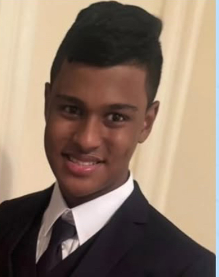
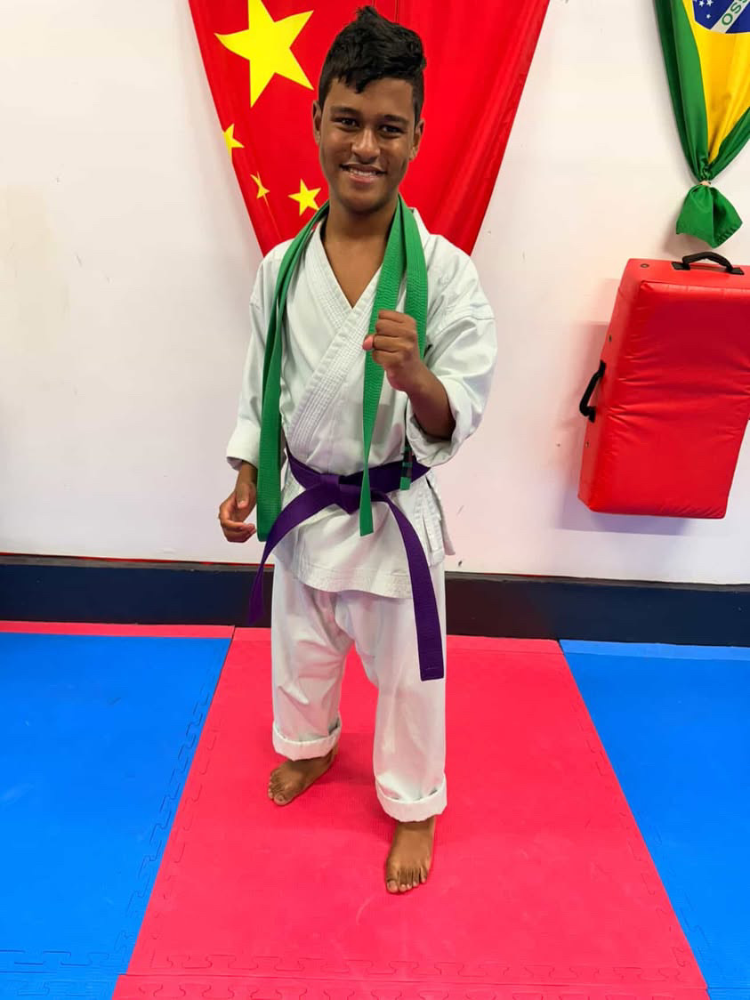

Meet Hasan Mahmud

Hasan Mahmud is a determined and inspiring young person whose journey with Cerebral Palsy demonstrates what's possible with hard work, family support, and an unstoppable spirit.
From birth, Hasan Mahmud has been receiving physical therapy at NYU — and when kindergarten began, therapy continued right in school as well. Those early years of consistent, dedicated therapy laid the foundation for every milestone that followed.
In 6th grade, Hasan Mahmud achieved a major breakthrough: learning to walk without walking aids. Now serving as Vice President and continuing to push boundaries every single day, Hasan Mahmud is proof that there are no limits to what dedication and heart can achieve.
PT Since Birth
NYU & in-school
Purple Belt
Karate since 7th grade

HSTAT Track Team
Since starting high school

Vice President
Student leadership